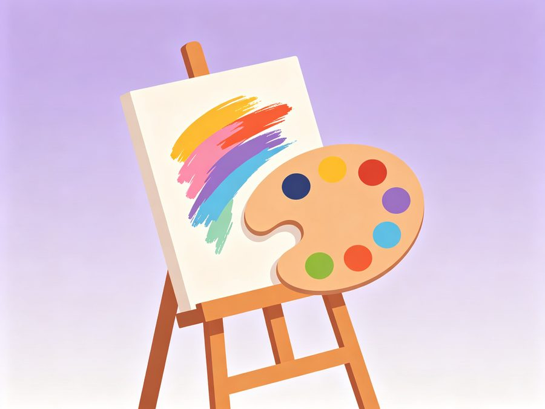

个人背景
我来自"珍珠城"蚌埠，淮河穿城而过。从小学习绘画，2018 年第一次看到围棋 AI 战胜人类棋手，我被"机器也能学会创造"深深震撼；高二时接触 Python，用爬虫给班级做过成绩分析小工具，从此立志学习人工智能。
2023 年我考入本校人工智能专业，先后加入机器人社团和自然语言处理课题组做科研助理，目前正跟着学长学习 Transformer 与大模型微调，希望未来能让 AI 技术真正落地到创意与教育场景。
兴趣爱好
绘画是我的"第一门语言"，也是我理解 AI 生成艺术的起点。

绘画 & 手工
我从小学五年级开始学素描和水彩，现在喜欢用数位板画插画，也尝试 Stable Diffusion 等生成式工具——比较"手绘"与"模型生成"的过程特别有意思：手绘考验观察与耐心，模型考验提示词与审美。
我还喜欢做羊毛毡和拼豆手工，宿舍书桌上摆满了作品。这些爱好让我在设计 AI 产品时更在意"人"的感受。
快速跳转
去团队主页看看大家的家乡介绍，或查看团队整体的职业技能发展规划。
个人职业技能发展规划
目标岗位：AI 算法工程师 → 大模型 / 多模态方向
大一 · 打基础
数学与 Python
夯实高等数学、线性代数、概率论与 Python 编程，理解梯度下降与矩阵运算的基本原理。
大二 · 学原理
机器学习与深度学习
系统学习机器学习经典算法与 PyTorch 框架，完成图像分类、文本情感分析等入门项目。
大三 · 做研究
NLP / 大模型与实习
深入 Transformer、LoRA 微调与多模态技术，加入实验室项目或企业实习，争取发表论文或开源贡献。
大四 · 定去向
保研 / 秋招
以读研深造或大厂算法岗为目标，沉淀项目与竞赛成果，向大模型应用与 AI 产品方向持续深耕。